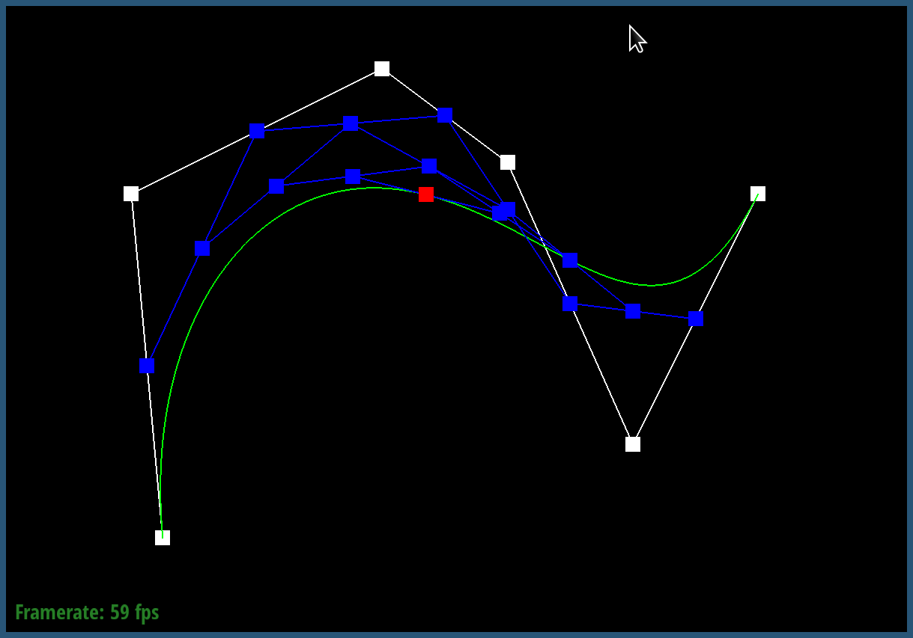
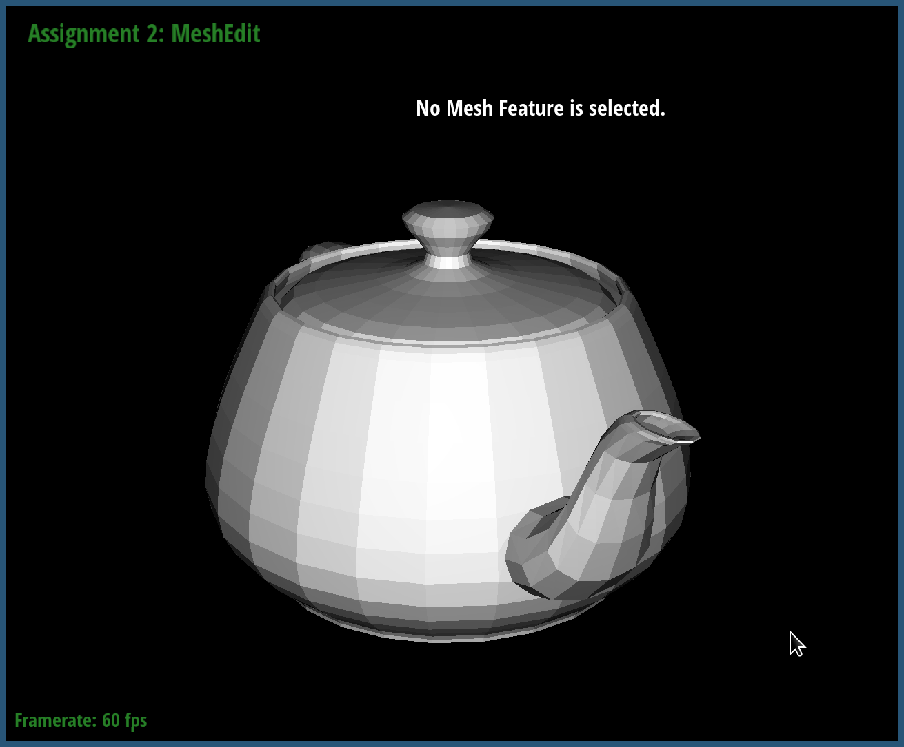

|
|||
This project was about techniques to build and manage meshes, the central data structure in computer graphics to represent objects realistically. We learned about how to represent curves that are easily managable with control points without having to enumerate all the points along the curve manually. We also learned how to manipulate existing polygon meshes, specifically manifolds, to convert them into a higher-resolution one that can have higher fidelity using surface subdivision, i.e. without editing the meshes manually.
de Casteljau's algorithm outlines the computational steps to evaluate Bezier curves. Bezier curve is a polynomially parameterized curve that meets specific boundary conditions at each points, e.g. their value and also their derivative. While you can find out each of the coefficients of the polynomial algebraically using the Hermite matrix form, de Casteljau's algorithm provides an easier way by recursively doing linear interpolation points along the lines of the control points, where the final step gives an actual point that lies on the curve.
I implemented the algorithm by writing a single step in this recursive
linear interpolation process, i.e. BezierCurve::evaluateStep().
It is a simple function that does the (t, (1-t))
linear interpolation between all adjacent size()-1 point pairs
stored in the points parameter.
The skeleton code would then repeatedly call this function until it reaches
the final point.
The curve is stored at docs/curve3.bzc.
|  |
Extension of de Casteljau algorithm to 2D surfaces is basically carrying out
the algorithm in one direction, and applying it hierarchically to the other
direction. For n x n points, we carry out the algorithm for each row of
points to get n 1D curves using u as the parameter, and then
for the "column" points on the n curves that share a same u
value, repeat the algorithm using v as the parameter. Change
u to get the sweeping surface of this curve and we get the
Bezier surface.
In the code, I implemented the single interpolation step in
BezierPatch::evaluateStep() which is identical to Part 1
except that it uses the parameter passed in for t, and wrote
BezierPatch::evaluate1D() that repeatedly calls evaluateStep()
until the final step by looping with exiting condtion
vector size == 1. Finally, BezierPatch::evaluate()
simply calls evaluate1D() on each rows and then the column
with the right parameter value to get the Bezier surface. I used
const references to refer to the row points (const auto &rowPoints)
to avoid copying over memory unnecessarily.
The key idea is that you don't need to compute the area of the face;
computing the normal vector by doing vector cross product of the two sides
of a triangle, already gives the normal vector whose magnitude is equal
to (twice) the area of the triangle. Thus, all I did was to
do this vector cross product for all neighboring faces, sum them,
and normalize them using Vector3D::unit().
One detail is that I added a new method Face::normalWeighted()
in halfEdgeMesh.cpp to do this cross product. The reason
was that I found this code to be almost identical to the existing
Face::normal(), except that it doesn't do unit()
at the end. So I offloaded this code to the Face class, and
simply called to the method in the face traversing loop in
Vertex::normal().
|  |
The idea of my implementation is to keep as many as possible the invariants that holds regardless of edge flipping, so that we can minimize the number of pointer updates and therefore possible bugs.
In flipEdge(), there is a comment saying
// Code should still work if we comment out everything below this.
The code above this line sets the halfedge pointer of all
relevant vertices and faces, so that they point to halfedges that stays the same
change even after flip. For example, the halfedge of the B vertex
vb is set to one of the halfedges in the original edge,
so that even after the flip, the pointed halfedge is not invalidated.
After that, we can safely update the members of the new halfedges
(h1 and h2) without worrying about the integrity
of the original mesh elements.
(Please note that the dark triangle is from degradation of normal after flipping, not a hole in the mesh.)
One source of bug that I encountered was not updating the h->face()
members of the halfedges. This resulted in holes in the rendered mesh,
probably because the faces were not reachable in the halfedge traversal.
It was a simple bug in hindsight but it made me realize it's important
to proof-read the specification of the problem very carefully.
My strategy here was simply to exhaustively list all the pointer updates,
regardless of whether they will actually be changed after the split, to
prevent mistakes. The lines that have a comment // remove?
at the end are the ones that can likely be safely removed, because their
values would not change (but I ended up leaving them in anyways.)
In the code, h1 ... h8 denotes the eight halfedges
that will be inside the polygon after the split. Note that h1
and h2 are reused from before the split; this is to avoid any
deletion of mesh elements, so that looping over them becomes easier with
no pointer invalidation. Likewise, f1 ... f4
are the four faces after the split, and eam ... edm
are the four edges.
Another rule of thumb was to handle the updates of all the halfedges first, which are trickier, and only after that think about linking them to the original mesh elements, i.e. vertices/edges/faces.
Fortunately this was less of a bumpy ride than part 4, and I think that was because I learned how to avoid the kinds of bugs that can come up from solving part 4.
I did not implement the boundary edges. :)
I directly followed the steps described in the spec/comment. The steps were
1. compute Vertex::newPosition,
2. compute Edge::newPosition
3. split, 4. flip, and 5. update vertex positions.
One detail was that to figure out which edge to flip, i.e. to figure out
which edges are "black" so that they should not be flipped. The problem
was that I couldn't use isNew directly, because they are already
used during the split so that the loop doesn't go over edges that are
newly created and thus fall into infinite loop. After this process,
all edges would be marked isNew, making it unusable to determine
which are the blue edges in the flipping stage.
My solution was to introduce a new class member variable isBlue
in the Edge class. I modified the splitEdge()
method in part 5 so that it marks the newly created edges (eam
and edm) as isBlue = true, and not the b-c edge
that was already there before the split. This way, I could determine
which are the blue edges that can possibly be flipped easily by simply
checking that member variable.
Another implementation detail was that for the new vertices that
are created after splits, instead of waiting to update their position at the
last stage, I updated them immediately right after calling
splitEdge() (around line 342). This seemed like the easiest
way to associate the Edge::newPosition member variable with
the actual new vertex that is created on that edge. In order to do
this later at the final stage, we'd need some way to query for every new
vertex which edge that vertex has been created on.
The code also has a cute trick of finding if a blue edge connects
a new vertex with an old vertex, by doing XOR on the two isNew
boolean values of the two vertices (line 358).
|
|
|||
One thing that can be observed, especially from cube, torus and icosahedron, is that the sharp edges become smoother and smoother, which is expected. Another perhaps undesirable effect is that those vertices at the edge moves towards inside the mesh more and more after subdivision, resulting in the overall size of the mesh shrinking and shrinking.
The cause of this is in the way we compute the new positions of the vertices. Because the positions of the old vertices are computed by doing weighted averages of the neighboring vertices, the more a vertex is protruded outwards compared to the neighboring vertices, the further it gets "pulled" towards inside at the next subdivision.
The problem is that this effect might not be something wanted for meshes that have intentionally sharp points, e.g. ear of a cow, fingers, etc. A possible solution to this (as indicated in the question) is to deliberately split more edges around the intentionally sharp parts of the mesh. By doing this, the protruding vertices will have more closely neighboring vertices that are also protruding outside by similar degrees, and therefore their new position will be less different to the old positions after taking the average of their positions.
This is because the starting edges of the cube were asymmetric to begin with. Because the neighbor relations between the vertices, i.e. edges, were asymmetric, their weighted average results were also asymmetric, resulting in a skewed smooth surface.
Therefore the solution is to make the starting edges be in a symmetric configuration. For this, I simply split all the diagonal edges to make them look like "X", as shown below. Now that the connectivity of the edges are symmetric when viewed from all 12 sides (or 8 vertices), we arrive at a smooth surface that is similarly symmetric.
Note that even with this the surface does not ever arrive at a perfect sphere. This is simply a limitation of the loop subdivision algorithm.